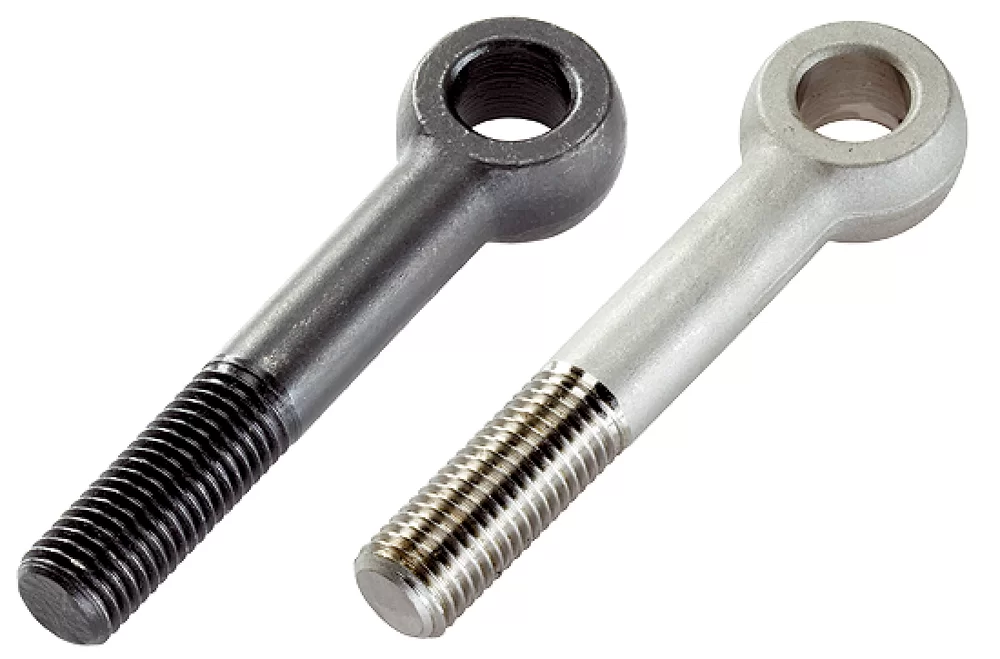

Baut Mata
Sambungan angkat dan rigging yang andal
Sambungan angkat dan rigging yang andal

Baut mata kami memiliki cincin bundar (mata) di salah satu ujungnya, dirancang untuk pengangkatan vertikal dan beban sudut. Diproduksi dari baja paduan berkekuatan tinggi dan 100% diuji magnaflux untuk retakan. Tersedia dalam desain standar (DIN 580, untuk pengangkatan vertikal) dan desain bahu (untuk beban sudut). Setiap baut memiliki peringkat beban dengan faktor keamanan minimum 5:1.
Baut mata kami dirancang untuk aplikasi pengangkatan, penarik, dan penahan yang aman. Konstruksi satu bagian tempa dari baja paduan menghilangkan risiko kegagalan las. Mata (cincin) dirancang untuk menampung kait, belenggu, atau tali, menyediakan titik putar yang andal untuk angkat di atas kepala.
Kami menawarkan dua desain utama: Baut Mata Standar (DIN 580) yang dinilai hanya untuk pengangkatan vertikal, dan Baut Mata Pola Bahu yang dirancang untuk menahan beban sudut hingga 45°. Semua produk telah diuji beban dan ditandai secara individual dengan ukuran ulir, peringkat beban, dan kode ketertelusuran.
Sesuai ISO 3266
Grade 8.8–12.9
M6 – M100
7–15 hari
| Standar | DIN 580, ISO 3266, ASME B18.15, GB/T 825 |
|---|---|
| Bahan | Baja Karbon (C45), Baja Paduan (40Cr/4140), Baja Tahan Karat 304/316 |
| Grade | 4.8, 8.8, 10.9 (grade angkat), A2-70, A4-80 |
| Ukuran | M5 – M24 |
| Panjang | M6 – M100 (UNC/UNF tersedia berdasarkan permintaan) |
| Lapisan Permukaan | Lapis Seng, Galvanis Celup Panas, Oksida Hitam, Dacromet |
| Ulir | Metrik Kasar (ISO), Metrik Halus |
| MOQ | 10 kg (standar), dapat dinegosiasikan untuk pesanan khusus |
| Kemasan | Kotak karton, palet kayu, atau sesuai permintaan pelanggan |
Sambungan struktural, pemasangan fasad, instalasi peralatan
Jembatan, pembatas jalan, pagar, tiang rambu
Penahan peralatan, sistem konveyor, dasar mesin
Pemasangan panel surya, dasar turbin angin, tiang utilitas
Pemasangan dek, tiang pagar, instalasi pintu garasi
Pemasangan dinding, perlengkapan langit-langit, instalasi kamar mandi
| Ukuran | Ulir | Rentang Panjang | Kekuatan Tarik Keluar | Kekuatan Geser | Kedalaman Tanam |
|---|---|---|---|---|---|
| M5 | 0.8 mm | 12 - 100 mm | 0.07 kN | 0.02 kN | |
| M6 | 1.0 mm | 12 - 120 mm | 0.12 kN | 0.04 kN | |
| M8 | 1.25 mm | 16 - 150 mm | 0.18 kN | 0.06 kN | |
| M10 | 1.5 mm | 20 - 200 mm | 0.25 kN | 0.08 kN | |
| M12 | 1.75 mm | 25 - 250 mm | 0.35 kN | 0.12 kN | |
| M16 | 2.0 mm | 30 - 300 mm | 0.80 kN | 0.28 kN | |
| M20 | 2.5 mm | 40 - 400 mm | 1.50 kN | 0.50 kN | |
| M24 | 3.0 mm | 50 - 500 mm | 2.50 kN | 0.85 kN |
February 10, 2026
"Menggunakan baut mata ini untuk pengangkatan overhead di bengkel kami. Faktor keamanan 5:1 memberi kami ketenangan pikiran. Semua lulus uji magnaflux seperti yang dijanjikan."
January 25, 2026
"Memesan baut mata pola bahu M16 untuk pengangkatan miring. Ulir bersih dan presisi, dan tanda peringkat beban tercetak jelas. Sangat puas."
December 18, 2025
"Baut mata DIN 580 tiba lebih awal dari yang diharapkan. Digunakan untuk mengangkat peralatan. Konstruksi kokoh dan tidak berubah bentuk di bawah beban. Sangat direkomendasikan."
November 30, 2025
"Kualitas baik untuk harganya. Lapisan galvanis celup panas seragam dan tahan korosi. Sempurna untuk aplikasi kelautan kami."
October 22, 2025
"Membeli baut mata M20 untuk proyek tali-temali. Sertifikat uji beban disertakan. Layanan profesional dan produk berkualitas."
Kami dapat memproduksi produk sesuai spesifikasi Anda — cukup kirimkan detailnya.
Hubungi Tim Kami